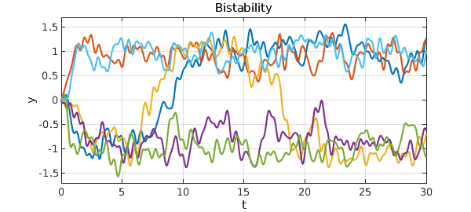
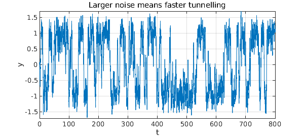

Here is a bistable equation with additive noise: $$ y' = y - y^3 + f, $$ where $f$ is a random term of fixed amplitude. There is an unstable fixed point of the deterministic part of the equation at $y=0$ and stable fixed points at $y = \pm 1$, which tend to attract solutions. The noise moves solutions around. Here for example are six trajectories.
dom = [0 30]; N = chebop(dom); rng(4)
N.lbc = 0; N.op = @(t,y) diff(y) - y + y^3;
lambda = 0.5;
for k = 1:6
f = 0.45*randnfun(lambda,dom,'big');
y = N\f; plot(y), hold on
end
xlabel('t'), ylabel('y'), hold off
title('Bistability')
ylim([-1.7 1.7]), grid on, drawnow
Couldn't create JOGL canvas--using painters Couldn't create JOGL canvas--using painters Couldn't create JOGL canvas--using painters

With the choices of parameters we have just used, it is clear that there is a tendency for trajectories to settle down near $+1$ or $-1$. However, these fates are not permanent. Eventually a random fluctuation will switch the trajectory to the other state, and with probability 1, this will happen infinitely often as $t\to\infty$. Here is an illustrative trajectory over the interval $t\in [0,800]$.
dom = [0 800]; N.domain = dom;
f = 0.45*randnfun(lambda,dom,'big');
LW = 'linewidth';
y = N\f; plot(y,LW,.5)
xlabel('t'), ylabel('y')
ylim([-1.7 1.7]), grid on
title('Tunnelling')
What we are seeing here is the tunnelling effect so famous in quantum mechanics, which is associated for example with the decay of radioactive atoms. Here as in that example, small differences in parameters can have exponential effects on tunnelling rates. If we move the stable states further apart, or equivalently reduce the noise amplitude, then the metastable state will survive much longer. Conversely if we move the stable states closer together, or equivalently increase the noise amplitude, then the metastable states will not survive as long. Here for example we rerun the last experiment but with the noise coefficient increased from $0.45$ to $0.60$.
f = (0.60/0.45)*f;
y = N\f; plot(y,LW,.5)
xlabel('t'), ylabel('y')
ylim([-1.7 1.7]), grid on
title('Larger noise means faster tunnelling')
